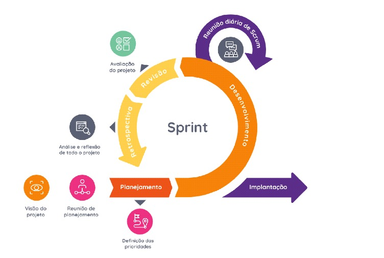

O que é a Metodologia Scrum:
Para entendermos o conceito da Metodologia Scrum precisamos primeiro compreender algumas nomenclaturas e seus significados:
Framework: É um conjunto de estruturas (blibliotecas) que tem como objetivo serem utilizados na solução de problemas relacionados à desenvolvimento de projetos.
Metodologia Ágil: É um conjunto de práticas de gestão que tem como objetivo melhorar a produtividade de projeto de diversas formas, essas formas serão explicadas e exemplificadas na metodoligia Scrum.
Podemos dizer então que a metodologia Scrum é um framework ágil amplamente utilizado no desenvolvimento de software e também aplicado em outros tipos de projetos. Ela facilita o trabalho em equipe e garante a entrega contínua de valor ao cliente. O Scrum funciona em ciclos curtos e repetidos, chamados sprints, que geralmente duram de 2 a 4 semanas esses ciclos podem ser representados visualmente pela imagem a seguir onde durante as sprints ciclos se repetem para que processos e procedimentos sejam realizados, verificados e validados.
Atualmente, é uma das metodologias ágeis mais populares. Sua principal função é tornar o processo de produção mais flexível e adaptável, permitindo que as equipes ajustem rapidamente suas prioridades de acordo com as necessidades do projeto. As equipes são incentivadas a trabalhar em sprints, períodos curtos e muito produtivos, com o objetivo de entregar valor ao cliente de forma contínua.
Neste site, vamos explorar os principais componentes do Scrum, para que você compreenda como gerenciar e aplicar essa metodologia em seus projetos, contribuindo para o sucesso deles. Vamos também discutir como implementar o Scrum de maneira eficaz na sua empresa, para maximizar a eficiência e adaptabilidade em um mercado de tecnologia competitivo.
De acordo com a metodologia Scrum, o desenvolvimento de software é organizado em três níveis principais: Sprint, Release e Product. Tudo começa com uma lista de requisitos que refletem o valor para o cliente, chamada de Product Backlog. A partir dessa lista, um subconjunto de itens é selecionado para formar o Release Product, que por sua vez é dividido em partes menores chamadas Sprints.
Os Sprints são ciclos curtos de desenvolvimento, focados em entregar funcionalidades específicas. Uma vez que o trabalho de um sprint é acordado pela equipe, ele não pode ser alterado, a menos que haja uma emergência. Esses níveis ajudam a organizar o trabalho de forma que o produto evolua de maneira constante e controlada, garantindo entregas frequentes de valor ao cliente.